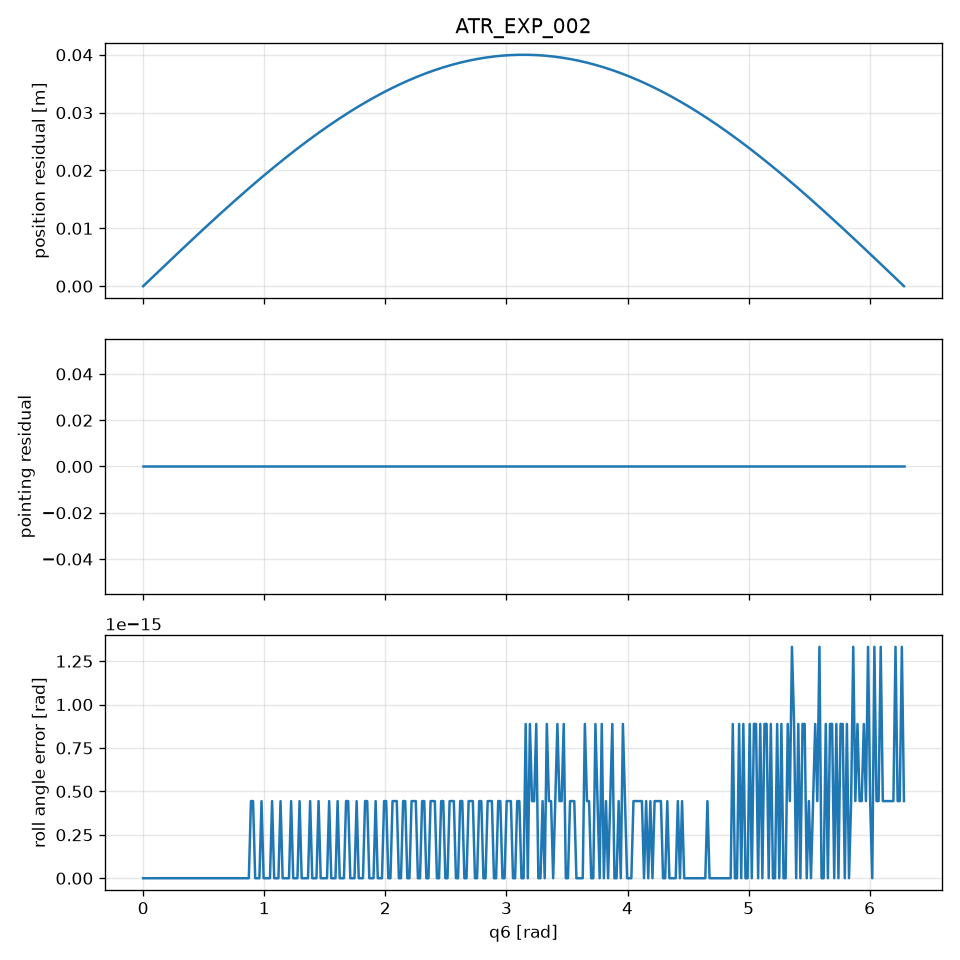

Experiments
ATR_EXP_001 — Aligned positive control
PASS
Expected. position invariant; pointing invariant; roll recovers Delta q6
Observed. max|dp|=0.000e+00 m; max|dd|=0.000e+00; max roll err=1.332e-15 rad
max |Δp| = 0.000e+00 m ·
max |Δd| = 0.000e+00 ·
max roll err = 1.332e-15 rad ·
position_changes = False ·
pointing_changes = False

ATR_EXP_002 — Off-axis task point
PASS
Expected. position changes; pointing invariant
Observed. position_changes=True; pointing_changes=False; max|dp|=4.000e-02 m
max |Δp| = 4.000e-02 m ·
max |Δd| = 0.000e+00 ·
max roll err = 1.332e-15 rad ·
position_changes = True ·
pointing_changes = False

ATR_EXP_003 — Misaligned pointing direction
PASS
Expected. position invariant; pointing changes
Observed. position_changes=False; pointing_changes=True; max|dd|=3.973e-01
max |Δp| = 0.000e+00 m ·
max |Δd| = 3.973e-01 ·
max roll err = 8.748e-02 rad ·
position_changes = False ·
pointing_changes = True

ATR_EXP_004 — Combined alignment violation
PASS
Expected. position and pointing both change
Observed. position_changes=True; pointing_changes=True
max |Δp| = 4.000e-02 m ·
max |Δd| = 3.973e-01 ·
max roll err = 8.748e-02 rad ·
position_changes = True ·
pointing_changes = True

ATR_EXP_005 — Finite-difference refinement
PASS
Expected. analytical vs central-FD derivative error converges over usable h
Observed. h=0.01: dp_err=3.333e-07, dd_err=3.311e-06; h=0.001: dp_err=3.333e-09, dd_err=3.311e-08; h=0.0001: dp_err=3.336e-11, dd_err=3.312e-10; h=1e-05: dp_err=4.699e-13, dd_err=3.471e-12; h=1e-06: dp_err=5.174e-12, dd_err=3.713e-12
Fixture intentionally violates alignment so derivatives are nonzero.
max |Δp| = 4.000e-02 m ·
max |Δd| = 3.973e-01 ·
max roll err = 8.712e-02 rad ·
position_changes = True ·
pointing_changes = True